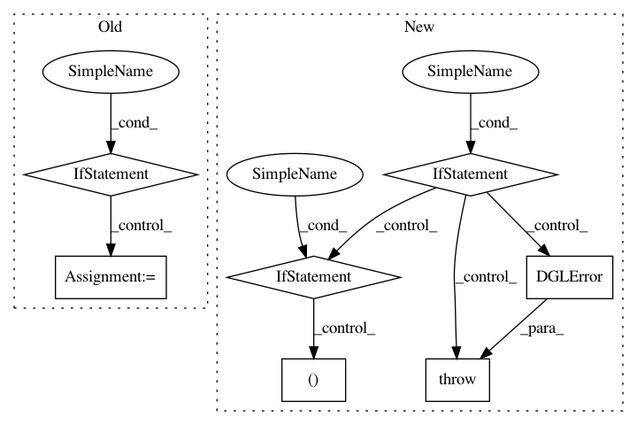

69f5869f3b6d190ed99e156a932634393ab361dd,python/dgl/nn/pytorch/conv/sageconv.py,SAGEConv,__init__,#SAGEConv#Any#Any#Any#Any#Any#Any#Any#,50
Before Change
self.fc_pool = nn.Linear(self._in_src_feats, self._in_src_feats)
if aggregator_type == "lstm":
self.lstm = nn.LSTM(self._in_src_feats, self._in_src_feats, batch_first=True)
if aggregator_type != "gcn":
self.fc_self = nn.Linear(self._in_dst_feats, out_feats, bias=bias)
self.fc_neigh = nn.Linear(self._in_src_feats, out_feats, bias=bias)
self.reset_parameters()
def reset_parameters(self):
After Change
if aggregator_type == "lstm":
self.lstm = nn.LSTM(self._in_src_feats, self._in_src_feats, batch_first=True)
if aggregator_type != "gcn":
self.fc_self = nn.Linear(self._in_dst_feats, out_feats, bias=bias)
self.fc_neigh = nn.Linear(self._in_src_feats, out_feats, bias=bias)
self.reset_parameters()
def reset_parameters(self):
r
Description
-----------
Reinitialize learnable parameters.
Notes
-----
The linear weights :math:`W^{(l)}` are initialized using Glorot uniform initialization.
The LSTM module is using xavier initialization method for its weights.
gain = nn.init.calculate_gain("relu")
if self._aggre_type == "pool":
nn.init.xavier_uniform_(self.fc_pool.weight, gain=gain)
if self._aggre_type == "lstm":
self.lstm.reset_parameters()
if self._aggre_type != "gcn":
In pattern: SUPERPATTERN
Frequency: 3
Non-data size: 7
Instances
Project Name: dmlc/dgl
Commit Name: 69f5869f3b6d190ed99e156a932634393ab361dd
Time: 2020-08-12
Author: xiaotj1990327@gmail.com
File Name: python/dgl/nn/pytorch/conv/sageconv.py
Class Name: SAGEConv
Method Name: __init__
Project Name: dmlc/dgl
Commit Name: 3e76bcc0528e2cd1584837162b3f286048fcd7ea
Time: 2018-10-18
Author: wmjlyjemaine@gmail.com
File Name: python/dgl/graph.py
Class Name: DGLGraph
Method Name: set_n_repr
Project Name: dmlc/dgl
Commit Name: 3e76bcc0528e2cd1584837162b3f286048fcd7ea
Time: 2018-10-18
Author: wmjlyjemaine@gmail.com
File Name: python/dgl/graph.py
Class Name: DGLGraph
Method Name: set_e_repr_by_id